Au mois d'avril 2018, j'ai réalisé un projet 30 jours consacré à la bande dessinée et sur le thème de l'espace.
Contexte
Mon dernier projet artistique, l'expérience graphique n°2, n'a pas spécialement été une très bonne expérience pour moi. Suite à ce petit projet, je ne me sentais plus trop motivé côté dessin. Et puis, après une petite pause, je me suis dit qu'un projet 30 jours ne me ferait que du bien pour relancer la machine créative.
Ce projet d'une planche BD par jour me cherchait depuis quelque temps mais il me fallait un thème. Celui-ci m'a été donné par Akemi et Diatomée qui se sont lancés dernièrement dans la réalisation d'une bande dessinée sur le thème de la conquête spatiale. J'adore l'astronomie, la SF et j'ai toujours la tête dans les étoiles donc ça sera un thème parfait! J'ai l'habitude de faire des projets 30 jours, mais là, c'est différent. C'est la première fois que je crée sur le médium de la bande dessinée.
Préparatifs et choix avant le défi
Après avoir acheté quelques fournitures, blocs de feuilles et godets d'aquarelle, j'ai voulu prendre un petit moment, avant le défi, pour me préparer... déjà psychologiquement ^^... et aussi définir des thèmes journaliers. Le thème principal chapeautant le défi, c'est l'espace, la conquête spatiale et l'astronomie en général. Mais pour me faciliter la tâche dans cet univers infini, j'ai voulu, comme pour le inktober, m'imposer des thèmes journaliers, créant ainsi des contraintes artistiques volontaires, m'évitent de très longues heures de recherches avant de passer à l'action. Concernant la bande dessinée, j'ai choisi de ne pas me mettre de contraintes de style (franco-belge, manga, comics...). J'ai souhaité être le plus libre possible de ce côté pour expérimenter la mise en scène et les possibilités qu'offre le médium. .
Donc voilà, si je récapitule, une planche de bande dessinée par jour sur le thème principal de l'univers, de l'espace et sous la contrainte d'un thème journalier. Tout était ok, je pouvais décoller!
Les commentaires sur les planches ont été rédigés pendant le défi.
01/30 - multivers
Le thème du multivers m'a inspiré pas mal de choses. Au départ, j'étais parti pour exploiter une idée que j'ai depuis quelque temps : raconter une histoire et rajouter une feuille de calque par-dessus pour symboliser un univers parallèle. J'ai tenté un petit croquis de cette idée : l'histoire principale (en noir) se déroule dans un désert au Mexique et l'univers rouge se trouve dans un monde parallèle mais sur le même lieu.
L'histoire m'avait l'air compréhensible, marrante et en accord avec la date du jour... avec le poisson d'avril (super combo ^^). Mais j'ai voulu me rapprocher des étoiles pour introduire ce défi. Du coup, direction Mars ! Je suis partis sur une autre idée, tout en conservant la base de la première, à savoir, la mise en parallèle de deux univers sur le même décor. Imaginons que sur la planète Mars, dans un univers parallèle la vie est présente. Dans notre univers, alors que les humains cherchent déserpérémment des traces anciennes ou présentes de vie sur la planète rouge, dans l'univers parallèle, la surface de Mars grouille d'une faune et flore variée.
Multivers
Pour aller plus loin, je me suis amuser à faire cette petite animation. Lorsque je mets un filtre transparent rouge devant les deux dernières cases, la vie disparaît et ne reste que les cratères sur la planète. Le filtre pourrait symboliser notre regard sur le monde. dans ce cas, on devrait alors peut-être changer de filtre, on découvrirait peut-être des traces de vie... :)
Le regard humain passe-t-il par un filtre rouge?
Matériel utilisé : feutres à encre de Chine, aquarelle, acrylique, posca.
Ressources extérieurs utilisées lors de la conception de la planche :
wikipédia multivers☼ / émission de france Culture "Multivers : un problème à plusieurs dimensions☼.
02/30 - le monde d’Encelade
Le monde d'Encelade
Encelade est un satellite de la planète Saturne. Ce petit bout de roche, de glace et d'eau liquide pourrait potentiellement habiter une vie extraterrestre. Du moins, dans notre système solaire, c'est dans cette direction que les recherches en exobiologie se concentrent. Il y a Titan aussi, une autre lune de Saturne, et Europe (de Jupiter), que j'exploiterais peut-être dans une autre planche.
Pour ce thème, je me suis posé la question : qu'est-ce qu'un monde? Je pense que l'on peut donner plusieurs sens à ce mot. Pour ma part, je l'assimile à deux "idées". D'abord à la visibilité, à ce qui est connu (en 1492, Christophe Colomb par exemple posait le pied sur le "nouveau monde", un monde inconnu jusqu'alors). Ainsi ce qui séparerait deux mondes serait la connaissance du lieu. Je l'assimile aussi au concept de "typicité" d'un lieu. Lorsque je suis dans un monde (le Sahara ou l'antarctique par exemple), je me trouve dans un lieu régi par des conditions climatiques, sociales... qui lui sont propres. J'ai donc tenté de réunir ces deux idées dans la planche. Les cases représentent les mondes connus (cases fermées), inconnus (hors cases) ou en cours d'exploration (case non fermée)
Je suis plutôt satisfait du rendu, surtout de la case 2. J'ai hésité à représenter le monde de glaces en collant des petits morceaux de papier bleuté. J'ai bien fait de le faire uniquement à l'aquarelle je pense. Je testerais le collage plus tard peut-être. Je me demande juste si la planche est compréhensible sans texte... Cela raconte l'exploration du satellite par des humains et la découverte d'une forme de vie sous-marine. Pour découvrir cette vie, l'être humain est arrivé sur la surface d'Encelade, a foré un tunnel dans la glace, puis est arrivé dans une poche d'eau liquide habité d'une vie bien étrange, tout un nouveau monde à explorer.
Matériel utilisé : feutres à encre de Chine, aquarelle, acrylique, posca.
Ressources extérieurs utilisées lors de la conception de la planche : livre Destination Système Solaire / Bande dessinée Trilium.
03/30 - aurore boréale
Aurore boréale
Lors de mes petites recherches sur le thème du jour, j'ai appris beaucoup de sur notre planète, son fonctionnement magnétique et la formation des aurores polaires. J'ai par exemple appris que la couleur des aurores était déterminée par la composition des gaz de l'atmosphère☼. En général, elles sont de couleur verte (oxygène de basse altitude), mais peuvent aussi prendre plus rarement des couleurs rosées (azote), rouges (oxygène de haute altitude) ou bleutées (hydrogène ou hélium). J'ai aussi appris comment se formait un orage magnétique! La vidéo sur cette dans le lien suivant est vraiment impressionnante !!! ☼
Revenons un instant sur la bande dessinée du jour. Cette petite planche m'a donné du fil à retordre. La répétition d'un décor n'est pas très évidente surtout sans tablette graphique, sans Ctrl+C / Ctrl+V... mais j'ai été patient. Au final, j'ai bien aimé le rendu final! Cette courte planche raconte la légende finlandaise qui veut que la queue des renards polaires éjecte de la poussière dans le ciel, pour illuminer, sur son passage, la nuit de quelques rayures éclatantes. En Finlande, les aurores sont appelées revontulet, ce qui signifie "feux du renard".
Matériel utilisé : feutres à encre de Chine, aquarelle, acrylique, crayon de couleur, posca.
Ressources extérieurs utilisées lors de la conception de la planche :
article web : L'atmosphère et la magnétosphère (2017 - Olivier Esslinger) ☼; Les aurores boréales(2016 - Agence spaciale Canadienne) ☼
/ Pages wikipédia : les ceinture de Van Allen☼, Aurore polaire☼
/ Jeu vidéo : Season After Fall (esthétisme du renard)☼
04/30 - réserve d’oxygène
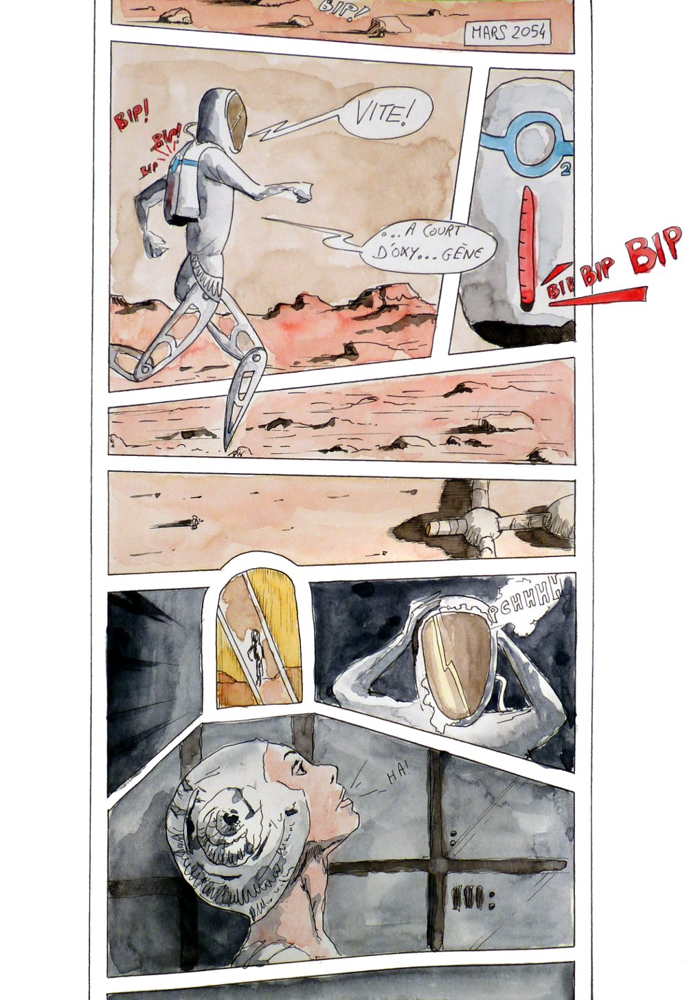
Réserve d'oxygène
Pour le thème du jour, j'ai choisi pour une fois dans ce défi, de mener un seul personnage sur différents décors. Ainsi, on suit une astronaute sur la planète Mars qui n'a pas fait attention à sa réserve d'oxygène. Bon... ce n'est pas très réaliste pour le coup, car lorsqu'on a peu d'oxygène, on ne se met pas à courir, on préfère économiser le peu d'O2 qu'il nous reste. Mais bon, ça passait bien dans l'action et puis, on peut aussi partir du principe que sa réserve d'O2 était au plus bas et qu'elle a économisé en marchant tranquillement juste avant. ^^
Cette histoire devait être rythmée. Les cases sont donc débullées connotant le mouvement et la vitesse de l'action. Aussi, les bords hauts et bas de la BD ne sont pas arrêtés car j'ai trouvé intéressant de prendre l'action en son cours, comme si on arrivait au beau milieu de l'événement. Autre point de mise en scène : le personnage est tellement pressé, qu'il saute de cases en cases.
Matériel utilisé : feutres à encre de Chine, aquarelle.
Ressources extérieurs utilisées lors de la conception de la planche :
Photographie☼
05/30 - extrêmophiles
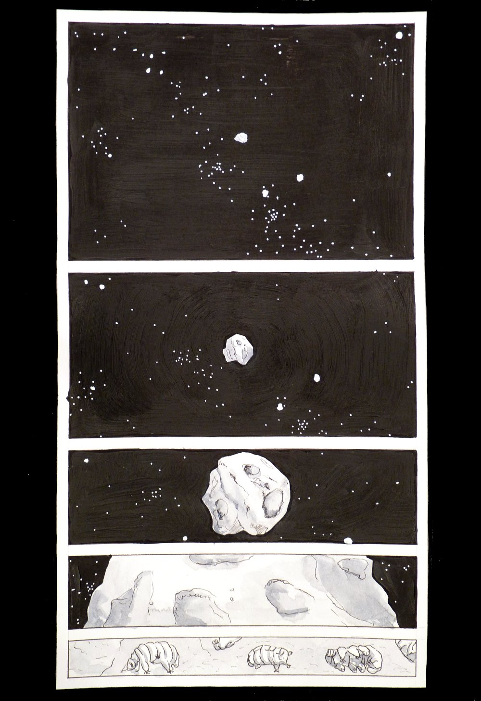
Extrêmophiles
Aujourd'hui, je commence à ressentir la fatigue accumulée ces derniers jours. Ce n'est pas un défi bien simple, chaque planche me prend entre 3h et 6h de travail. Mais je garde la motivation, j'apprends beaucoup de choses, que ça soit sur la BD ou sur les sujets abordés quotidiennement et je suis, pour l'instant, plutôt satisfait des planches que je réalise. C'est vraiment ce qui me motive à continuer.
Le thème du jour était très intéressant : les extrêmophiles, de petits organismes vivants qui résistent à des conditions de vie extrême sur Terre. Après quelques de recherches, j'ai choisi d'exploiter le thème en rapport avec "l'ensemencement de la vie". Sur la planche, on peut voir un zoom sur une comète jusqu'au niveau microscopique. On se rend compte à la fin de la planche que l'objet céleste porte une forme de vie. Il s'agit en fait d'un organisme extrémophile présent sur Terre également : l'ourson d'eau. Il s'agit d'un microscopique animal qui résiste à tout un tas de conditions dont le vide spatial et le manque d'oxygène. J'ai trouvé que c'était un bon candidat pour ensemencer une vie sur une planète tellurique. À savoir aussi que certaines recherches en exobiologies se concentrent sur l'étude de ces micro-organismes et leur éventuelle présence dans le sol de Mars par exemple (programme ExoMars).
J'ai choisi de réduire progressivement la hauteur des cases afin d'accentuer l'effet de zoom sur la comète.
Matériel utilisé : feutres à encre de Chine, aquarelle, acrylique, posca.
Ressources extérieurs utilisées lors de la conception de la planche :
Pages wikipédia : Tardigrades, Oursons d'eau☼, Comète Tchouri☼
/ Vidéos : À quoi sert l'étude des extrêmophiles pour l'exploration spatiale ? (2016 - Numerama)☼
/ Article web : ExoMars, À la recherche des traces d’une vie martienne (CNES) ☼
06/30 - planète bleue
Ce thème m'a tout de suite inspiré la Terre que l'on surnomme planète bleue. Mais j'ai trouvé cela trop simple, alors j'ai eu l'idée de faire trois planètes bleues très rapprochées. Chose impensable, mais pourquoi pas... c'est de la science-fiction pas de la science.
Planètes bleues
La planche présente la découverte par un pilote d'un monde bleu un peu particulier. Chacun y voit ce qu'il veut. Personnellement, je pense que le pilote a dû manger un champignon bleu ou trop écouter de Effel65. Je voulais presque rajouter un lapin blanc en arrière-plan, dans la dernière case, mais c'était un peu trop ^^ .
Plus sérieusement, sur cette planche j'ai travaillé la couleur bleue en apportant des touches de couleurs complémentaires (jaunes et orangées) en petite quantité pour le faire ressortir. J'ai eu cette idée car j'avais faits une erreur dans la première bulle. J'ai dû mettre du correcteur blanc et cela se voyait un peu. J'ai donc eu l'idée de toutes les colorés. Je me suis bien amusé sur l'aquarelle, surtout sur la première case, mais dans la dernière je n'ai pas réussi à rendre ce que j'avais en tête. Je voulais que toutes les nuances de bleu soient représentées. Il faut aussi que je travaille la typo car mes textes ne sont pas réguliers.
Matériel utilisé : feutres à encre de Chine, aquarelle, acrylique, posca.
Ressources extérieurs utilisées lors de la conception de la planche :
Livre : Destination Système Solaire (2014 - ed. Marabout)/ Art de la couleur (1961 - Johannes Itten) ☼
/ Vidéos : Tutoriel BD : La typo BD (2016 - Christophe Delvallé)☼
/ sortie dans les bois à la recherche de morilles.
07/30 - gravité étouffante
Pour l'idée du jour, je me suis inspiré d'un livre de Pierre Bordage. En fait, c'est le premier résultat de mon moteur de recherche qui possède l'expression "gravité étouffante". Je me suis inspiré du passage du livre où l'expression est utilisée. Ce passage relate le départ d'Yvain de la planète Kélonia.
Capitaine Yvain écrit le dernier rapport de service sur la planète Kélonia
J'ai cherché comment je pouvais représenter une gravité étouffante. J'ai d'abord choisi de placer le personnage de Yvain en grand sur le bord de la BD. Ce personnage est imposant de par sa taille et son armure métallique, sorte d'exosquelette qui le maintient en vie car, sur la planète Kélonia, les conditions de vie sont dures. La gravité à sa surface est de 25,49 m/s² (2,6 fois la gravité terrestre). J'ai essayé de symboliser cet étouffement par deux éléments : les deux bandeaux blancs de chaque côté de la planche créant une sorte d'étau autour du personnage, puis par le zebrage noir entourant les cases. Plus le personnage quitte la surface, plus la gravité est faible et plus cet effet disparaît.
Matériel utilisé : feutres à encre de Chine, aquarelle, acrylique, posca.
Ressources extérieurs utilisées lors de la conception de la planche :
Livre : Rohel le conquérant, tome 6 : Les Anges du fer (1994 - Pierre Bordage) ☼ / Images : armures Half-Life ☼
08/30 - espaces de Calabi-Yau
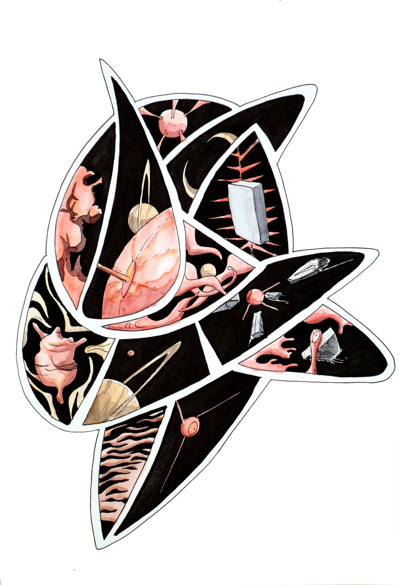
Une histoire emprisonnée dans un espace de Calabi-Yau
Avec le sujet d'aujourd'hui, j'ai plongé dans l'infiniment petit et dans la théorie des cordes. Bon, je ne vais pas m’étendre sur le sujet, car c’est assez complexe, je risquerais de vous endormir et je ne suis pas sûr d’avoir tout bien compris. Mais d'après ce que j’ai pu comprendre, les espaces de Calabi-Yau sont, dans cette théorie, des espaces à 6 dimensions dans lesquels des cordes peuvent vibrer. Il en existerait différentes formes (plus de 10100 de formes possibles) et ces espaces influeraient la manière dont les particules s’expriment.
Pour traiter le thème, j’ai choisi de projeter une bd dans un de ces espaces complexes dans le désordre. L'idée c'est que l'on peut se créer différentes histoires. Bon, c’est un peu méta comme truc mais du coup je souhaitais représenter la multitude de formes possible de ces espaces : si je tourne le dessin par exemple, d’autres associations d’images peuvent être cohérentes et donc changer l'interprétation de l'histoire.
Matériel utilisé : feutres à encre de Chine, aquarelle, posca.
Ressources extérieurs utilisées lors de la conception de la planche : Vidéos : La Théorie des Cordes (2015 - Science étonnante) ☼; Calabi-Yau Spaces (2011 - Tiffany Inglis)☼
/ Pages wikipedia : Variété de Calabi-Yau ☼
09/30 - Andromède
Statue commémorative de la rencontre de deux galaxies, de deux formes de vies évolées
Comme vous le savez peut-être, notre galaxie, la Voie lactée va entrer en collision avec sa voisine, Andromède, dans quelques milliards d'années. Leur coalescence formera une seule et même galaxie que j'aime appeler Andromilka. Je me suis alors demandé ce que donnerait la rencontre entre deux formes de vie évoluées de chaque galaxie. Cette planche commémore cet évênement.
Je ne suis pas très satisfait de ma planche. Le dessin ne ressemble pas tellement à une bande dessinée mais plus à une illustration. Je me suis dit que ça allait passer sans bordures de cases et avec seulement deux cases, mais il faut dire que la lecture n'est pas facile.
Matériel utilisé : Aquarelle.
Ressources extérieurs utilisées lors de la conception de la planche :
Pages wikipedia : Collision entre la galaxie d'Andromède et la Voie lactée ☼
/ Articles : Galaxie d'Andromède : sa formation enfin élucidée (2018 - CNRS)☼
/ Podcast : Galaxie d'Andromède, notre si jeune voisine (2018 - France culture) ☼
/ Ressources graphiques : l'alien par Teo Kryštůfek ☼, la statue humaine ☼
10/30 - assistance gravitationnelle
L'assistance gravitationnelle désigne une manœuvre spatiale consistant à modifier la direction et la vitesse d'un engin spatial à l'aide de la force gravitationnelle d'une planète généralement.
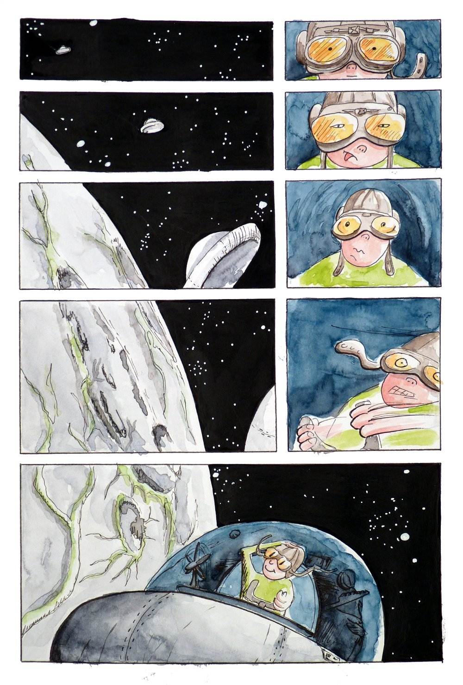
Quelque part dans l'univers, un aventurier de l'espace tente une manœuvre périeuse
Dans la petite planche, un aventurier de l'espace tente cette petite manœuvre. Il n'a pas pensé au pilotage automatique en construisant son vaisseau et n'a pas non plus pris assez de carburant... En conséquence de ces petits oublis, il est contraint de piloter manuellement l'engin. Le jeune aventurier utilise alors l'attraction de la planète Lunorganicum, passe derrière la planète et quitte l'orbite de l'astre avec une augmentation notable de sa vitesse! Manœuvre réussie!
Matériel utilisé : feutres à encre de Chine, aquarelle, acrylique, posca.
Ressources extérieurs utilisées lors de la conception de la planche : Podcast : Rosetta, mission accomplie (2016 - France culture) ☼
/ Pages wikipedia : Assistance gravitationnelle ☼
11/30 - pulsar lumineux
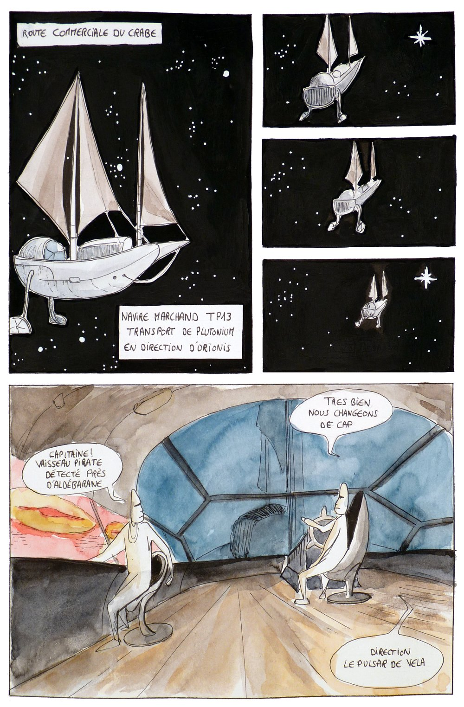
Le pulsar comme guide dans l'univers
Les pulsars sont des étoiles à neutrons qui tournent à très grandes vitesses. Dans la planche, j'ai voulu jouer sur la métaphore du phare. En effet, les pulsars sont un peu considérés comme tel puisqu'ils vibrent chacun de façons différentes et de manière très précise. En analysant leurs vibrations, on peut facilement se repérer dans l'espace.
La planche représente un vaisseau marchand se guidant dans l'univers avec ces étoiles. Je ne suis pas tellement satisfait du résultat surtout de la dernière case où j'ai assez mal géré l'aquarelle et la composition de l'image. Je me rends compte aussi que j'use souvent du zoom et du dézoom des objets...
Matériel utilisé : feutres à encre de Chine, aquarelle, acrylique, posca.
Ressources extérieurs utilisées lors de la conception de la planche : Podcast : Pulsars, la grande horlogerie cosmique (2017 - France culture) ☼
/ Pages wikipedia : Pulsar ☼
12/30 - nébuleuse planétaire
Ce thème m'a fait penser à la légèreté et à la jeunesse. J'ai beaucoup aimé faire cette petite bande dessinée.
au couffin de l'espace
J'ai testé les projections de peinture acrylique pour représenter les étoiles. C'est une technique intéressante et je trouve le rendu des étoiles bien meilleur, je vais donc la travailler un peu. J'aimerais aussi mettre un peu plus de texte sur mes planches. Je vais tester peut-être de débuter la conception d'une planche par un texte, un poème ou un dialogue entre personnages puis de mettre en scène ce texte.
Matériel utilisé : feutres à encre de Chine, aquarelle, acrylique, posca.
Ressources extérieurs utilisées lors de la conception de la planche : Vidéos : Nebula Watercolor Painting (2017 - Taylor Humby)☼
13/30 - voyage temporel
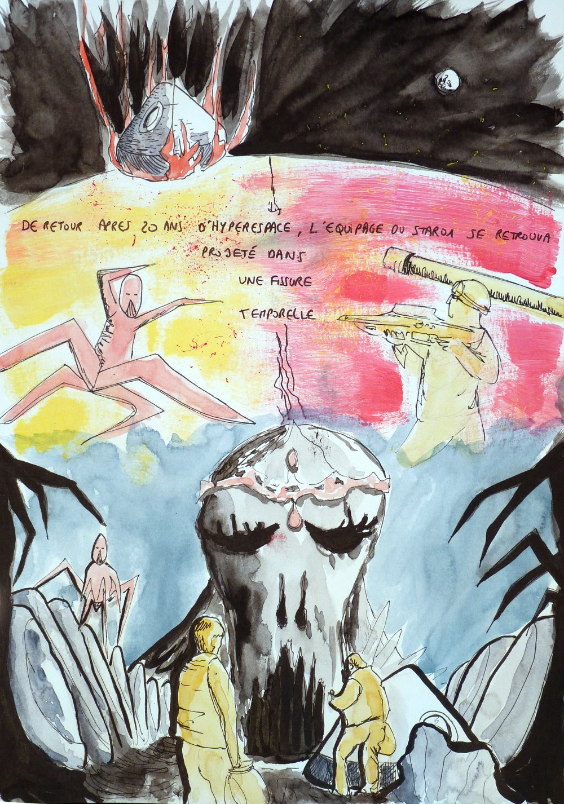
un voyage temporelle
Le voyage temporel est un sujet passionnant à développer en bande dessinée et en science-fiction mais je n'ai pas su l'exploiter à sa juste valeur par manque de temps et de motivation. La planche réalisée n'est donc pas tellement compréhensible. Le scénario, la composition, l'encrage, la couleur... tout a foutu le camp. Bref, échec complet mais ce n'est pas grave, je continue!! ^^
Matériel utilisé : feutres à encre de Chine, aquarelle, acrylique, posca.
Ressources extérieurs utilisées lors de la conception de la planche : Podcast : Le voyage dans le temps aura-t-il déjà eu lieu ? (2017 - France Culture) ☼
/ Pages wikipedia : Le voyage dans le temps ☼
/ Articles web : Petit guide pratique pour candidat au voyage temporel (2017 - Pierre Ropert) ☼, BD Créer du temps ! (2006 - Paul Glaudel) ☼
14/30 - courbure de l'espace-temps
J'avais envie de retrouver le petit personnage créé dans la planche 12 pour le faire glisser sur la courbure de l'espace-temps.
Une glisse sur l'espace temps
J'ai tenté de mettre un peu plus de texte et de travailler le thème en matière de mise en scène. J'ai placé les textes sur la planche de façon à gérer le temps de lecture. Lorsque le petit personnage passe près au plus près de son étoile, on le verrait ralentir. Ainsi, j'ai souhaité retranscrire cela dans le temps de lecture et dans l'espace donné aux cases.
Matériel utilisé : feutres encre de Chine, aquarelle.
Ressources extérieurs utilisées lors de la conception de la planche :
Articles web : La relativité générale et la courbure de l’espace-temps (2017 - Olivier Esslinger)☼
/ Pages wikipedia : Espace-temps ☼
15/30 - inversion du champ magnétique
.
Une pause de pensée à mi-parcours... Il y a d'autres choses qui me tournent dans la tête en ce moment et je n'ai pas la tête à dessiner... Je fais donc le minimum pour ne pas lâcher.
Matériel utilisé : feutres à encre de Chine, acrylique, posca.
Ressources extérieurs utilisées lors de la conception de la planche :
Pages wikipedia : Inversion du champ magnétique terrestre ☼
16/30 - éruption
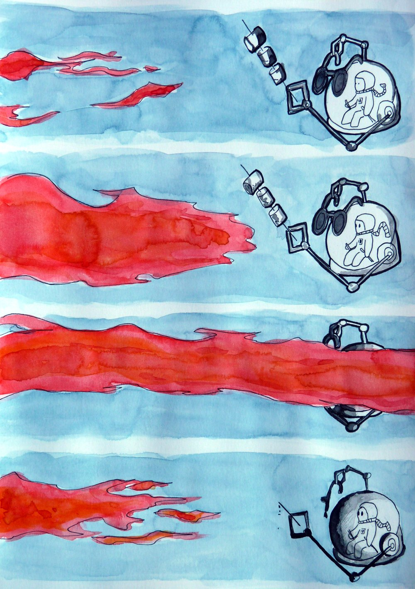
Une éruption surprenante
J'ai choisi de travailler sur les éruptions solaires avec un petit sketch de notre petit astronaute. Attention à ne pas jouer trop près du feu petit astronaute !
Matériel utilisé : feutres à encre de Chine, aquarelle, posca.
Ressources extérieurs utilisées lors de la conception de la planche : Pages wikipedia : Eruption solaire ☼
17/30 - Cassiopée
Destruction du miroir de Cassiopée
Cassiopée est une constellation en forme de w facilement repérable dans le ciel de l'hémisphère nord. Dans la mythologie grecque, Cassiopée est la reine d'Ethiopie, mère d'Andromède. Elle est souvent représentée sur son trône, s'admirant dans un miroir. La planche mêle les deux sens (constellation et mythologie) et j'ai décidé de représenter le miroir en morceaux. La lecture de la planche, en suivant les débris du miroir, se fait en forme de W et si vous reliez les points noirs présents dans chacune des 5 cases principales, vous retrouvez la forme de la constellation.
C'était aussi pour moi l'occasion de m'exprimer sur ce qui se trame sur la ZAD de Notre-Dame-des-Landes et qui me révolte. Je peux difficilement en parler en ce moment à quelqu'un donc c'est une manière pour moi de m'exprimer et de décharger un peu d'émotions. La salamandre à droite est le symbole du feu et de l'amour, mais aussi pour moi le symbole de la reconstruction.
Matériel utilisé : feutres à encre de Chine, aquarelle, acrylique, posca.
Ressources extérieurs utilisées lors de la conception de la planche : ZAD ;
Pages wikipedia : Cassiopée (constellation)☼, Cassiopée (mythologie)☼
18/30 - décompte
Décompte final pour une odyssée spatiale
Pour ce thème, je me suis inspiré du titre de musique Space Oddity de David Bowie☼. Dans ce titre, Major Tom se prépare pour une odyssée spatiale et le décompte de lancement de sa fusée peut s'entendre dans le premier couplet. J'ai alors repris les paroles en les illustrants.
Ground Control to Major Tom
Ground Control to Major Tom
Take your protein pills and put your helmet on
Ground Control to Major Tom (ten, nine, eight, seven, six)
Commencing countdown, engines on (five, four, three)
Check ignition and may God's love be with you (two, one, liftoff)
Matériel utilisé : feutres à encre de Chine, aquarelle, posca.
Ressources extérieurs utilisées lors de la conception de la planche :
Images : image de la salle de contrôle ☼, images de l’intérieur d’un soyouz ☼, images du décollage d’une fusée ☼image astronaute ☼
/ lyrics du titre Space Oddity de David Bowie ☼
19/30 - café étoilé
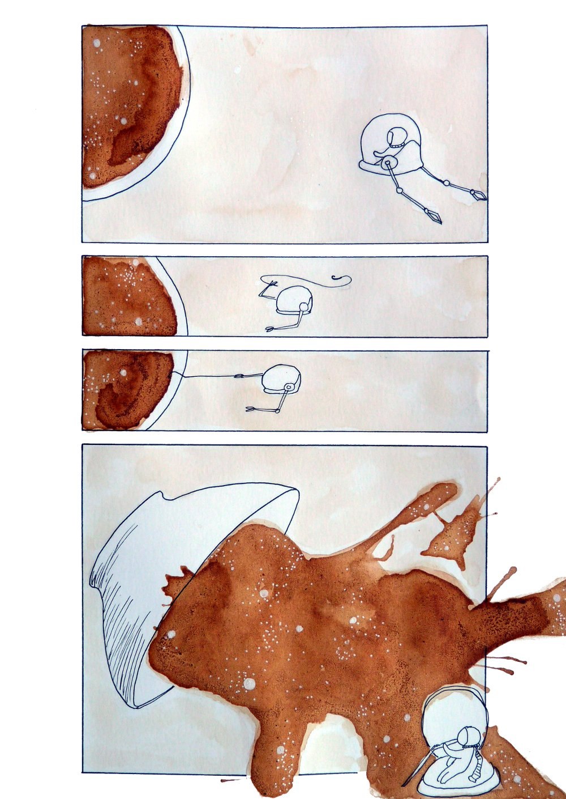
Le petit astronaute prend son petit déjeuné
Pour ce thème un peu saugrenu, je suis parti dans l'espace avec le petit astronaute. Bien évidemment, commençant la réflexion autour de la planche vers 22h15, j'ai dû trouver une idée simple et une petite histoire qui se dessine facilement en quelques cases. Je remarque que j'emploie de plus en plus le petit astronaute dans mes planches. C'est un personnage auquel je m'attache de plus en plus, qui est simple à dessiner et qui me permet de travailler les thèmes de manière plus poétique je dirais.
J'ai utilisé de la chicorée pour la couleur. C'est la première fois que je me sers d'un truc qui se boit ou qui se mange. Je voulais utiliser du café à la base mais comme je m'en faisais une tasse à côté, je voulais dormir après donc j'ai préféré quelques choses de décaféiné ^^. Pendant que j'y pense, il y aussi la betterave que j'aimerais tester un jour. J'ai trouvé intéressant d'utiliser de la chicorée, car le rendu visuel est différents de l'aquarelle, les grains sont apparents et une légère brillance peut se voir en bord de tâche. On ressent aussi du grain au toucher et la planche dégage l'odeur caramélisée de la chicorée. Lorsqu'on a la feuille dans les mains, on peut donc partager un bon café étoilé avec le petit astronaute. :)
Matériel utilisé : Feutres et plume à encre de Chine, chicorée.
Ressources extérieurs utilisées lors de la conception de la planche : ?
20/30 - atteindre l’objectif
Petite BD du soir...
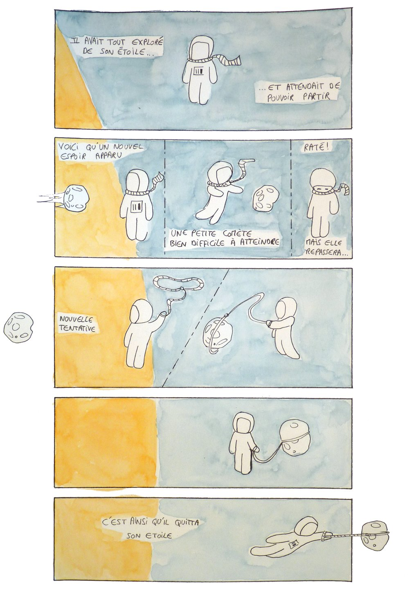
Atteindre l'objectif
C'est une histoire que j'avais déjà pensée avant le défi et notée sur un petit carnet (image ci-dessous). C'est sur cette recherche que j'ai inventé le petit astronaute. Je lui avais mis un fil qui pendait de sa combinaison, rappelant un peu un lien de sécurité, ce que j'ai remplacé plus tard par une écharpe (en référence je pense au Petit Prince de Saint-Exupéry)
Carnet de notes
Matériel utilisé : feutres à encre de Chine, aquarelle.
Ressources extérieurs utilisées lors de la conception de la planche : ?
21/30 - trou de ver
Pleins de trou de vers luisants !!
Pour ce thème, je me suis inspiré de la chanson Glow Worms de Vashti Bunyan☼. C'est une chanson que j'aime beaucoup. J'ai donc pensé à des trous de vers luisants géants dans l'espace. Et pourquoi pas. ^^
Matériel utilisé : feutres à encre de Chine, aquarelle, acrylique, posca.
Ressources extérieurs utilisées lors de la conception de la planche :
lyrics du titre Glow Worms de Vashti Bunyan ☼
/ Pages wikipedia : Lampyre (Lampyris noctiluca)☼, Trou de ver☼
22/30 - Proxima Centauri b
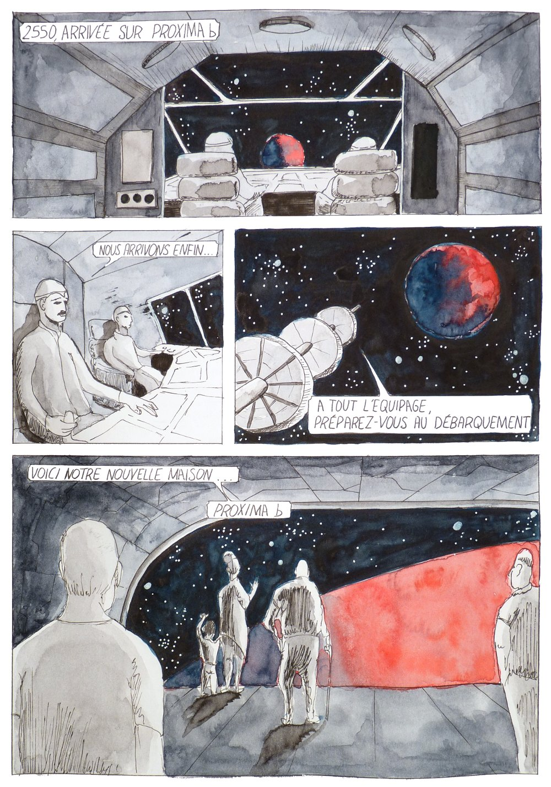
L'humanité arrivant sur Proxima b
Le système Proxima Centauri est le système planétaire le plus proche du système solaire, situé à quelque 4.2 années-lumière de chez nous. J'ai essayé de travailler la typographie sur cette planche. Côté aquarelle, je ne suis pas tellement satisfait. Après coup, je pense que j'aurais dû davantage foncer l'intérieur du vaisseau et les personnages. Il faut aussi que je m'améliore sur le dessin des personnages.
Matériel utilisé : feutres à encre de Chine, aquarelle, posca.
Ressources extérieurs utilisées lors de la conception de la planche : Vidéos : Voyage vers Proxima b (2017 - Sense Of Wonder) ☼
/ Pages wikipedia : Proxima Centauri b ☼
23/30 - ruine anthropomorphe
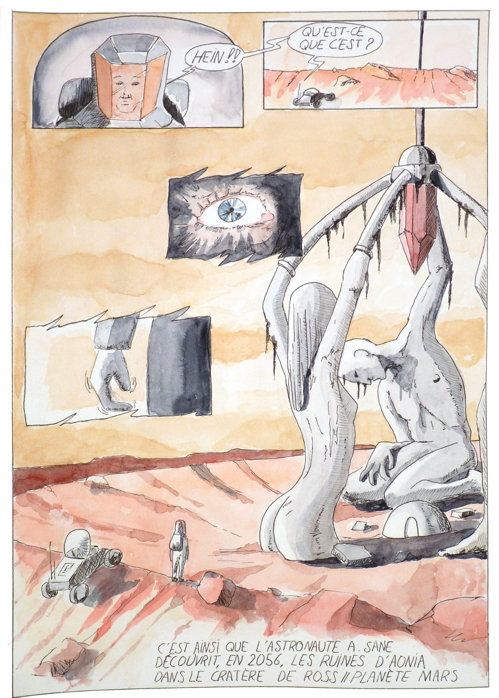
Découverte des ruines d'Aonia sur la planète Mars
Voici la planche qui raconte la découverte de ruines mystérieuses sur la planète Mars. J'ai bien aimé cette idée car une telle découverte remettrait en question l'origine de l'humanité et du vivant sur Terre.
Bon, j'avoue que j'ai un peu fait un hors sujet sur cette planche car l'anthropomorphisme ne s'applique pas aux humains mais à des animaux, objets, concepts, etc. En gros, c'est faire ressortir des traits humains dans les éléments non humains (comme les personnifications dans les fables de La Fontaine par exemple). Je me suis inspiré pour cette planche de la courte bande dessinée Le Tailleur de Brume des frères Schuiten, publiée sur le n°53 de Métal Hurlant. Une BD intéressante par les thèmes abordés!
Matériel utilisé : feutres à encre de Chine, aquarelle.
Ressources extérieurs utilisées lors de la conception de la planche : Bande dessinée : Le Tailleur de brume (1976 - François et luc Schuiten - éd. Métal Hurlant n°53 p27)
/ Livre : Morpho, anatomie artistique (2014 - Michel Lauricella - éd Eyrolles)
24/30 - monstre marin surdoué
Une bien belle bête
J'ai mis pas mal de temps à trouver une idée pour ce thème et puis j'ai fini par trouver une créature qui me plaisait sur Pinterest. J'ai donc construit mon histoire autour d'elle. J'ai noté quelques idées de compositions sur une feuille et hop!
Il fallait que la créature soit dotée d'une intelligence. J'ai choisi de développer une l'intelligence sociale interspécifique, une sorte de symbiose entre plusieurs espèces. Le "monstre" ne s'est montré que lorsque l'humain a pris l'échantillon vert, la petite algue poilue. Se sentant agressé, cette dernière a appelé la créature en changeant de couleur. On peut voir sur la dernière case que la créature est recouverte de cette espèce.
Matériel utilisé : feutres à encre de Chine, aquarelle, acrylique, posca
Ressources extérieurs utilisées lors de la conception de la planche : image de la créature ☼
25/30 - astre dormant
Pour cette planche, une question m'est venue à l'esprit : Qu'est-ce que donnerais une planète qui rêve?
Quelques rêves de la planète Terre
J'ai rédigé un petit texte et puis j'ai laissé faire mon inconscient pour le reste. En fait, j'ai choisi de faire cela, car je n'avais pas beaucoup de temps à consacrer à la planche ce jour. J'étais épuisé, il était 21h et je voulais vraiment me coucher tôt, histoire de récupérer un peu de sommeil en retard et puis parse que ça peut pu durer #PierrickSorin ^^ . Alors l'idée de laisser partir mon esprit à moitié endormi sur quelques cases à l'aquarelle, ça me plaisait bien et ça rentrait bien dans le thème.
Matériel utilisé : feutres à encre de Chine, aquarelle.
Ressources extérieurs utilisées lors de la conception de la planche : l'espoir de me coucher tôt.
26/30 - trou noir
notre petit astronaute disparait dans un trou noir à tout jamais
Sur cette planche, le petit astronaute se promène près d'un trou noir. C'est un objet qu'il ne connaît pas encore mais qu'il va apprendre à connaitre, puisqu'il tombe dedans à tout jamais. Eh oui, c'est la fin de ses aventures oniriques, on ne pourra plus le revoir.
Je suis plutôt satisfait de la représentation du trou noir. Je me suis aidé pour cela de quelques images et du simulateur d'univers SpaceEngine que j'affectionne tout particulièrement. Bon, ça casse pas trois pattes à un canard, mais ça fait le taff. Dans la première case, la vitesse du petit astronaute est représentée par le mouvement des étoiles qui laisse de légères trainées blanches derrière elles. Cela me permettait d'appréhender la notion de vitesse pour qu'il soit compris sur les cases suivantes, lorsque les étoiles sont proches du trou noir. Bon pour le côté scénario, je n'ai pas cherché le réalisme, les récits du petit astronaute sont davantage des fables que des exposés scientifiques... Néanmoins, j'ai tenté de replacer quelques notions liées aux trous noirs : la singularité, la spaghettification, l'absence de lumière, l'horizon des événements ou encore la symétrie de la lumière émise près de l'horizon... Eh oui, puisque le petit astronaute a été trop curieux et a plongé dans le trou noir, un endroit où ne peut sortir aucune lumière, c'est la dernière fois qu'on le voit dans ces petites cases. Son aventure a donc débuté dans les nébuleuses planètaires et s'est achevée dans le trou noir.
Matériel utilisé : feutres à encre de Chine, acrylique, posca.
Ressources extérieurs utilisées lors de la conception de la planche : Pages wikipedia : Spaghettification ☼ Trou noir ☼ / Simulateur d'univers SpaceEngine ☼
27/30 - points de Lagrange
la vie d'Ardur
Les points de Lagrange sont des zones d'équilibres dans un système orbital où des objets (généralement assez petits) peuvent avoir la même "rotation" que l'astre en orbite. Dans la planche, je vous présente 2010 TK7, un astéroïde troyen de la Terre, c'est-à-dire qui partage la même orbite que la Terre autour du Soleil.
Matériel utilisé : feutres à encre de Chine, aquarelle, posca.
Ressources extérieurs utilisées lors de la conception de la planche : Pages wikipedia : Point de Lagrange ☼, Astéroïde troyen de la Terre ☼, 2010 TK7 ☼
28/30 - naine rouge
La vie sur Proxima
Proxima du Centaure, l'étoile la plus proche de notre Soleil à 4,22 al, est une naine rouge. D'ailleurs ce type d'étoiles semble être le plus répandu dans l'univers. Une naine rouge dégage peu de lumière, est très petite et très peu massive mais cela leur permet de vivre des milliers de milliards d'années, alors que pour une étoile comme notre Soleil, une naine jaune, sa durée de vie est estimée à quelque 10 milliards d'années seulement.
Pour cette planche, j'ai souhaité continuer l'histoire de la planche 22 où des humains arrivaient sur Proxima b. La zone d'habitabilité près d'une naine rouge se trouve très près de l'étoile ce qui exposerait une planète à des éruptions stellaires. Côté mise en scène, j'ai jouer un peu avec le rouge. Pas tellement satisfait de la dernière case, elle est trop foncée et j'ai du mal avec les aplats de couleurs en aquarelle, je pense que cela vient du papier...
Matériel utilisé : feutres à encre de Chine, aquarelle.
Ressources extérieurs utilisées lors de la conception de la planche : Pages wikipedia : Naine rouge ☼, Proxima Centauri ☼
/ Bande dessinée Bluebells wood (2018 - Guillaume Sorel) ☼
29/30 - l’avant Big-Bang
Le souffle de l'univers
Pour ce thème, j'ai imaginé l'avant big-bang. La théorie du rebond m'a inspiré une représentation anthropomorphe d'une évolution cyclique de notre univers. Actuellement, notre univers est en expansion. Ceci est visible par le décalage vers le rouge des longueurs d'onde que nous renvoient les astres lointains. Mais cette tendance qu'à notre univers à s'étendre, à s'épandre vers une entropie froide, il est possible qu'elle soit renversable. Il est possible que notre univers d'avant big-bang ait été en phase de concentration de la matière. Un mouvement de respiration. Dans cette expérience de pensée, on pourrait se demander où s'arrête le film?
Matériel utilisé : feutres à encre de Chine, aquarelle, posca.
Ressources extérieurs utilisées lors de la conception de la planche : Podcast : Big Bang : un modèle qui rebondit ? (2017 - France culture) ☼
/ Page wikipedia : Décalage vers le rouge ☼
30/30 - atterrissage forcé
Un atterrissage en catastrophe
Pour cette dernière planche, pas grand-chose à ajouter. Le défi est terminé, je suis plutôt content de l'avoir tenu jusqu'à la fin.
Matériel utilisé : feutres à encre de Chine, aquarelle, feutre acrylic, posca.
Ressources extérieurs utilisées lors de la conception de la planche : livre : Star Wars Vaisseaux et engins de la Saga (2007 - Edition Nathan)
Bilan du défi
Ce défi créatif est de loin le plus ambitieux que j’ai eu à mener jusqu’à présent. Je suis content de l’avoir mené jusqu’au bout mais je suis au final assez mitigé sur les rendus et je vois aussi les limites de ce genre de défi appliqué à la bande dessinée. Voici le bilan du défi bande dessinée d’avril 2018 :
une évolution créative. La bande dessinée est un art dans lequel j’ai très peu d’expérience. Ma pratique du dessin jusqu’à présent se concentrait sur le dessin d’imagination, d’observation et l’illustration. Je ne m’étais jamais penché concrètement sur le dessin séquentiel. Dès le premier jour du défi, j’ai dû changer ma façon de penser le dessin et apprendre à jouer avec l’espace-temps, avec des personnages, leurs mouvements dans l’espace et avec les codes de la bande dessinée (les cases, les bulles). Ce défi m’a surtout permis d’expérimenter l’art de la BD et ainsi élargir ma palette d’expression graphique. Par la pratique du dessin durant 30 jours, j’ai pu faire évoluer mes techniques et expérimenter de nouvelles choses (typographie, projection de peinture acrylique). Un point que je dois travailler en priorité : les personnages et le dessin des corps humains.
l’importance des critiques ! Durant le défi, j’ai pu montrer mes planches à plusieurs personnes, sur internet ou à mes proches, qui m’ont fait des retours. Ces retours m’ont beaucoup aidé. J’utilise généralement beaucoup le symbolisme pour représenter le fond (les idées), et souvent, le thème n’est pas très compréhensible. Je ressentais parfois une petite frustration lorsque la planche n’était pas comprise, surtout au début du défi. J’ai alors tenté d’expliciter les messages sur la fin du défi, par l’ajout de textes et d’onomatopées. La compréhension des planches est un point sur lequel je vais travailler dans les prochaines bandes dessinées. Aussi, lorsque je montrais les planches à des personnes proches, je trouvais intéressant de porter attention au trajet du regard, au points qui attiraient leur attention, aux textes qui n’étaient pas fluide. J’ai pas mal appris de cet exercice.
les limites de ce défi. Faire une planche de BD par jour demande pas mal de travail de conception et de dessin. Je me suis vite rendu compte que l’exercice de faire une planche par jour n’était pas adapté pour aboutir au rendu que je souhaitais. Je sais très bien que l’on court toujours après un idéale de rendu, souvent inatteignable (et c’est très bien comme cela) et que j’ai fait du mieux que je pouvais, mais ces défis 30 jours ne sont pas adaptés selon moi pour faire des planches de BD travaillées et j’ai l’impression que la bande dessinée demande plus de temps que de passer 3 à 6 h par jour. Je terminais bien souvent mes BD vers 1h ou 2h du matin, le sommeil comme limite temporelle. Si bien qu’un épuisement s’est vite fait ressentir.
Une satisfaction mitigée. Personnellement, je suis vraiment satisfait des planches suivantes :
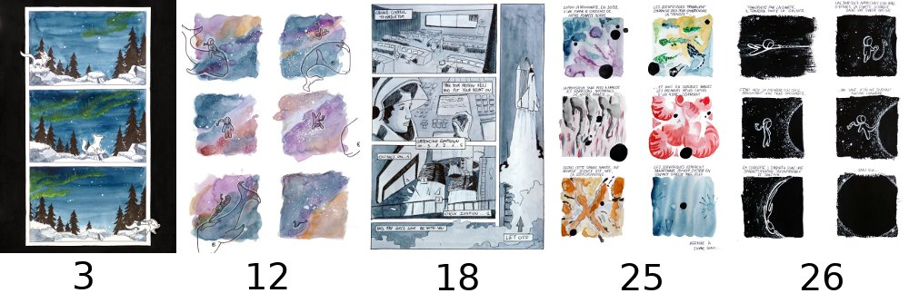
Je trouve ces planches assez bien équilibrées. Elles me serviront de base pour créer mes prochaines bandes dessinées. J’utilise ce genre de défi 30 jours pour expérimenter de nouvelles choses. Comme pour les autres défis (Incover, Inktober…) j’étais conscient que peu de création allait me satisfaire et ce n’est pas un problème. Ah si ! Je suis aussi satisfait de la trame narrative entre les 7 planches du petit astronaute. Travailler avec ce personnage, m’a permis de respirer durant le défi car il était simple à faire et que rien que sa présence m’inspirait et apportait une certaine légèreté. De le voir voyager d’astre en astre m’a beaucoup plu.
Si c’était à refaire. Si c’était à refaire, je ne ferais pas de rendus travaillés mais uniquement des brouillons de planches. Si c’était à refaire, je développerais une seule histoire sur tout le défi que je développerais en un mois. En somme, si c’était à refaire, je ne m’imposerais pas de créer une planche par jour mais je me fixerais comme objectif de rendre une BD de 5 ou 10 planches au bout d’un mois et de travailler chaque jour à sa conception, au travail du scénario, à l’agencement des cases, etc.
Musique, musique !! Voici les albums de musiques que j'ai écoutées durant le défi. Ces albums ont certainement influencé mes choix créatifs, c'est pour cela que je trouve intéressant de les mentionner en fin de cet article : Carbon Based Lifeforms - 2006 - LP - World Od Sleepers ☼
/ H.U.V.A Network - 2004 - LP - Distances ☼
/ Tangerine Dream - 1971 - LP - Alpha Centauri ☼
/ Vashti Bunyan - 1970 - LP - Just A Other Diamond Day ☼
/ Keith Jarrett - 1975 - LIVE - The Köln Concert
/ Brian Eno - 1983 - LP - Apollo: Atmospheres and Soundtracks
/ David Bowie - 1971 - LP - Hunky Dory
/ et bien d'autres...


 (pour plus d'info...).
(pour plus d'info...).